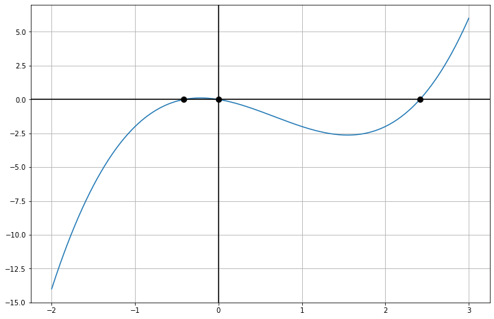

Funktioiden tutkiminen¶
Tässä notebookissa on muutamia esimerkkejä, joissa visualisoidaan funktioita ja niiden ominaisuuksia. Aja aina ensin koodisolu ja tämän jälkeen voit tutkailla funktioita liukusäätimien avulla. Koodia on myös kommentoitu, joten voit yrittää ottaa mallia koodista ja tehdä itse oman visualisointityökalun tai muokata valmiita koodeja.
Huom! Jos olet ajanut aiemmin toisen koodisolun ja palaat käyttämään toisen kuvaajan liukusäätimiä, saattavat jotkin arvot mennä sekaisin. Tästä syystä aja aina ensin se koodisolu, jonka liukusäätimiä haluat muuttaa.
Toisen asteen yhtälö¶
from ipywidgets import interactive
import matplotlib.pyplot as plt
import numpy as np
# Toisen asteen yhtälö
def toisen_asteen_yhtalo(x, a, b, c):
return a*x**2+b*x+c
# Määritetään vakiot
xmin = -5
xmax = 5
ymin = -2
ymax = 5
tickstep = 1
# Tehdään funktio, joka päivittää kuvaajaa sitä mukaan kun x:n arvoa muutetaan.
def update1(a, b, c):
fig = plt.figure(figsize=(12,8))
plt.title(r'$f(x)=ax^2+bx+c$',fontsize=20) # Kuvaajan otsikko
x = np.linspace(xmin, xmax, num=1000) # # Piirrettävä väli ja pisteiden lukumäärä
plt.plot(x, toisen_asteen_yhtalo(x,a,b,c), lw=2.5) # Piirretään toisen asteen yhtälö
# Akseleiden muotoilut
ax = fig.gca() # Haetaan muuttuja, jonka avulla akseleita muokataan
ax.set_ylim(ymin, ymax) # y-akselin rajat
ax.set_xlim(xmin, xmax) # x-akselin rajat
ax.set_xticks(np.arange(xmin, xmax+tickstep, tickstep)) # x-akselin pisteiden paikat
ax.set_yticks(np.arange(ymin, ymax+tickstep, tickstep)) # y-akselin pisteiden paikat
ax.axhline(y=0, color='k') # y=0 -suoran korostus
ax.axvline(x=0, color='k') # x=0 -suoran korostus
plt.grid() # Näytetään ruudukko
# Akseleiden otsikot
plt.xlabel("x",fontsize=20)
plt.ylabel("y",fontsize=20)
# Kuvaajan piirtäminen
plt.show()
# Tehdään interaktiivinen kuvaaja, jossa liukusäätimellä muutetaan x:n arvoa
# x:n arvon muuttuessa funktiota "update" kutsutaan valitulla x:n arvolla
interactive_plot = interactive(update1, a=(-2, 2, 0.05), b=(-5, 5, 0.2), c=(-5, 5, 0.2))
interactive_plot
Derivaatta ja tangentin kulmakerroin¶
from ipywidgets import interactive
import matplotlib.pyplot as plt
import numpy as np
# Tarkastellaan sinifunktiota. Merkitään funktiota kirjaimella "f".
def f(x):
return np.sin(x)
# Sinin derivaatta on kosini. Merkitään tätä "df".
def df(x):
return np.cos(x)
# Määritetään vakiot
xmin = -2*np.pi
xmax = 2*np.pi
step = np.pi/8
ymin = -2
ymax = 2
tickstep = np.pi/2
# Tehdään funktio, joka päivittää kuvaajaa sitä mukaan kun x:n arvoa muutetaan.
def update2(x):
fig = plt.figure(figsize=(12,8))
rng = np.linspace(xmin, xmax, num=1000) # Piirrettävä väli ja pisteiden lukumäärä
plt.plot(rng, f(rng), 'b-', lw=2.5) # Sinifunktion piirtäminen paksulla sinisellä viivalla
plt.plot(rng, df(x)*rng+f(x)-df(x)*x, 'r--') # Tangentin kulmakerroin punaisella katkoviivalla
plt.plot(x, f(x), 'ko') # Piste käyrällä
plt.text(x, f(x)+0.1, r'$k={:.4f}$'.format(df(x)), fontsize=20) # kulmakerroin teksti
plt.text(xmin+4/3*step,3/4*ymax,r'$f(x)=sin(x)$',color='b',fontsize=20) # funktio teksti
# Akseleiden muotoilut
ax = fig.gca() # Haetaan muuttuja, jonka avulla akseleita muokataan
ax.set_ylim(ymin, ymax) # y-akselin rajat
ax.set_xlim(xmin, xmax) # x-akselin rajat
ax.set_xticks(np.arange(xmin,xmax+step,tickstep)) # x-akselin pisteiden paikat
# x-akselin pisteiden otsikot.
ax.set_xticklabels([r"$-2\pi$",r'$-\frac{%s}{%s}$'%("3\pi",2),r"$-\pi$",r'$-\frac{%s}{%s}$'%("\pi",2),"0",r'$\frac{%s}{%s}$'%("\pi",2),r"$\pi$",r'$\frac{%s}{%s}$'%("3\pi",2),r"$2\pi$"])
ax.set_yticks(np.arange(ymin, ymax+1, 1)) # y-akselin pisteiden paikat
ax.xaxis.set_tick_params(labelsize=16) # x-akselin fonttikoko
ax.yaxis.set_tick_params(labelsize=16) # y-akselin fonttikoko
ax.axhline(y=0, color='k') # y=0 -suoran korostus
ax.axvline(x=0, color='k') # x=0 -suoran korostus
plt.grid() # Näytetään ruudukko
# Akseleiden otsikot
plt.xlabel("x",fontsize=20)
plt.ylabel("y",fontsize=20)
# Kuvaajan piirtäminen
plt.show()
# Tehdään interaktiivinen kuvaaja, jossa liukusäätimellä muutetaan x:n arvoa
# x:n arvon muuttuessa funktiota "update" kutsutaan valitulla x:n arvolla
interactive_plot = interactive(update2, x=(xmin,xmax,step))
interactive_plot
Funktion nollakohdat¶
Selvitetään funktion nollakohdat ja piirretään ne kuvaajaan. Pythonissa on symboliseen laskentaan tarkoitettu paketti “SymPy”, jota voidaan hyödyntää tässä tehtävässä.
from sympy import Symbol
from sympy.solvers import solve
import matplotlib.pyplot as plt
import numpy as np
# Määritetään ratkaistava funktio
def f(x):
return x**3-2*x**2-x
# Symbolista laskentaa varten otetaan symboli x käyttöön
x = Symbol('x')
# Ratkaistaan funktion juuret solve-työkalulla
roots = solve(f(x), x)
# Tulostetaan ratkaistut juuret
print(roots)
[0, 1 - sqrt(2), 1 + sqrt(2)]
# Piirretään funktiosta kuvaaja ja merkitään juuret kuvaan
rng = np.linspace(-2,3,num=1000) # Piirrettävä väli ja pisteiden lukumäärä
fig = plt.figure(figsize=(12,8)) # Alustetaan kuvaaja
plt.plot(rng,f(rng)) # Piirretään funktio välillä "rng"
# Piirretään jokainen juuri "roots"-listasta
for root in roots:
plt.plot(root, f(root), 'ko', markersize=8)
# Akseleiden muotoilut
ax = fig.gca() # Haetaan muuttuja, jonka avulla akseleita muokataan
ax.axhline(y=0, color='k') # y=0 -suoran korostus
ax.axvline(x=0, color='k') # x=0 -suoran korostus
plt.grid() # Näytetään ruudukko
# Kuvaajan näyttäminen
plt.show()
